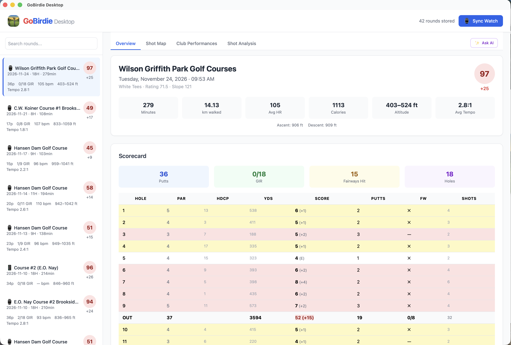
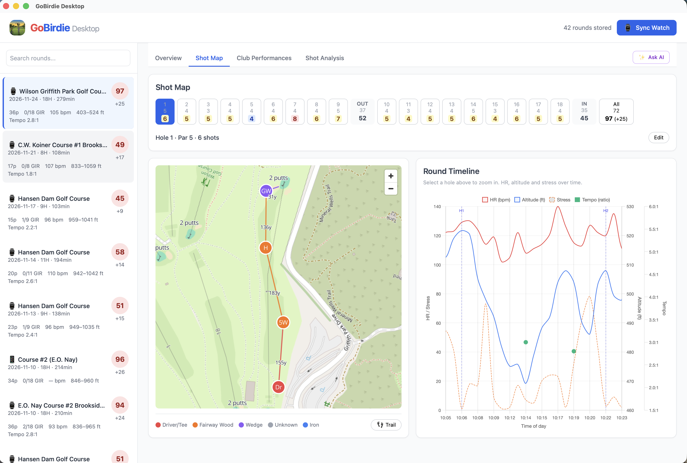
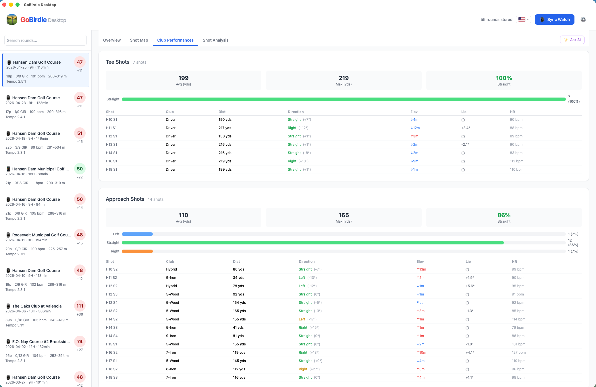
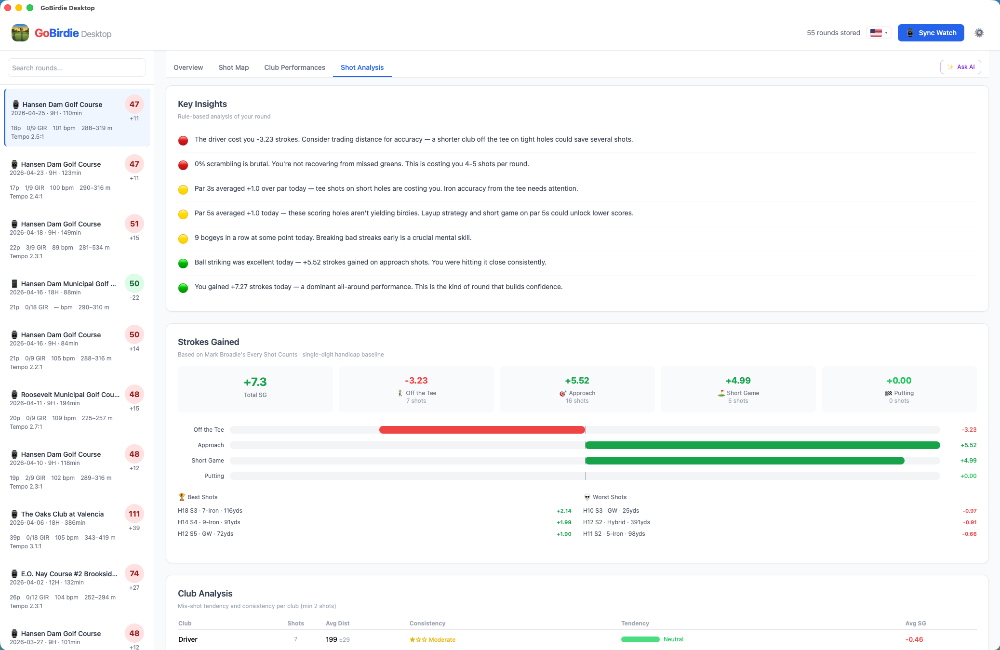
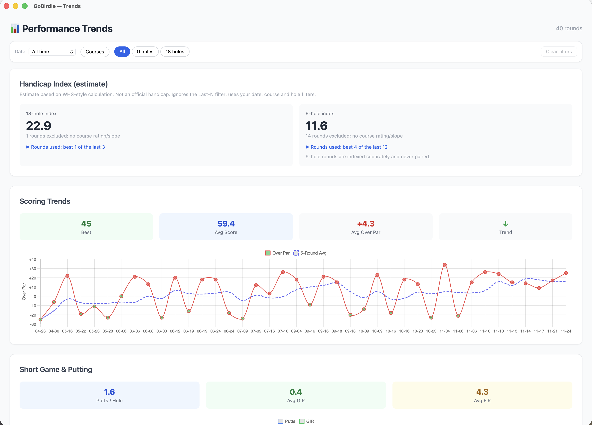
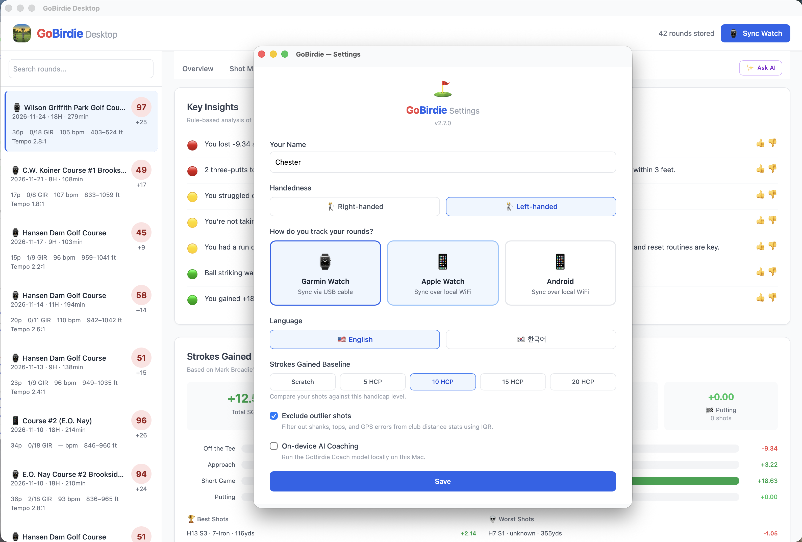

Understand every round you play.
GoBirdie Desktop turns your Garmin, Apple Watch and Android round data into shot maps, scoring trends and club statistics, all on your own computer.
Download for macOS or Windows View source on GitHubWhat it does
Shot maps
Every shot on a map, colored by club. Zoom to a hole, see distances, lie angle and elevation for each shot.
Scorecard
Front 9 and back 9 with subtotals and a round total, plus fairways, greens in regulation and putts.
Trends
Scoring, short game and fitness over time. Filter by date range, course, or 9 and 18 holes.
Club performance
Distance, direction and dispersion for each club, with a club summary table.
Heart rate and stress
Heart rate, altitude and stress over the round, with a timeline you can zoom into per hole.
Handicap estimate
A WHS-style index calculated from your rounds. It is an estimate, not an official handicap.






How rounds get in
Garmin watch
Connect the watch by USB. GoBirdie reads the activity and scorecard files from it.
Apple Watch and iPhone
Sync over your local Wi-Fi network (macOS).
Android
Sync over your local Wi-Fi network from the GoBirdie Android app.
Your data stays with you
Rounds are stored on your computer. Google Drive backup is optional and only uses a folder the app creates. Read the privacy policy for the details, including the few third-party requests the app makes.
Get started
Download the latest build from the Releases page. Source code, build steps and issues are on GitHub.